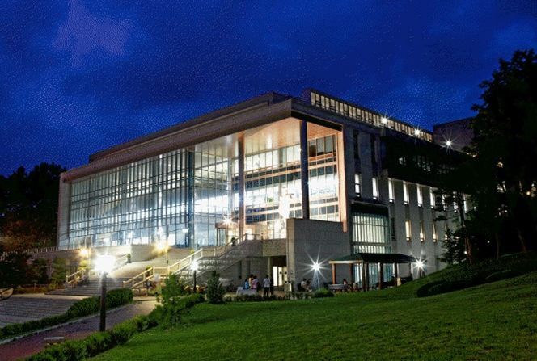

한림대학교는 강원특별자치도 춘천시에 있는 사립대학입니다. 1982년에 설립됐고, 의과대학과 간호대학을 갖춘 의료 중심 대학으로 알려져 있습니다. 캠퍼스 바로 옆에 춘천성심병원이 있고, 한림대학교의료원 소속 병원이 수도권과 강원에 여러 곳 있습니다.
2027학년도 수시 원서접수는 2026년 9월 7일부터 11일까지였고 이미 마감됐습니다. 그래도 이 대학을 정리해 두는 이유는, 고1·고2 자녀를 두신 분들께 지원 전략을 짜는 기준 하나를 보여 주는 사례이기 때문입니다.
먼저 큰 그림입니다.
- 학생부교과 1,100명대 — 수시에서 가장 큰 덩어리입니다.
- 학생부종합 600명대
- 실기·실적위주 20여 명
- 의학과·간호학과를 뺀 전 모집단위가 수능최저 없음 — 이 대학의 가장 큰 특징입니다.
- 학생부교과는 면접이 없습니다 — 학생부 성적만으로 선발합니다.
- 의생명과학대학 자율전공 30여 명 신설
① 수시가 사실상 전부입니다
한림대는 정시보다 수시 비중이 압도적으로 큰 대학입니다. 언론에 공개된 2027학년도 정시 계획을 보면 정시 선발 비중은 20%가 채 되지 않습니다. 나머지는 모두 수시입니다.
이 구조가 학부모님께 갖는 의미는 분명합니다. 이 대학을 목표로 한다면 승부는 고등학교 내신에서 납니다. 수능을 잘 봐서 만회한다는 그림이 잘 그려지지 않는 대학입니다.
뒤집어 말하면, 학교 공부는 성실히 하는데 모의고사만 유독 흔들리는 아이에게 맞는 대학이기도 합니다. 그런 아이는 의외로 많습니다. 학교 시험 범위는 끝까지 챙기는데 처음 보는 지문·낯선 문제 형식에서 무너지는 유형입니다.
② 학생부교과 — 면접도, 수능최저도 없습니다
가장 큰 전형인 학생부교과는 선발 방식이 대단히 단순합니다. 학생부 성적 100%이고, 그 안에서 교과 90% + 출결 10%로 나뉩니다. 면접은 없습니다.
반영 교과는 모집단위에 따라 세 갈래입니다.
- 대부분의 모집단위 — 국어·영어·수학과 사회 또는 과학 중 상위 3개 교과를 같은 비율로 반영합니다.
- 간호학과 — 수학 40%에 국어·영어·사회·과학을 각 20%씩 반영합니다.
- 글로벌학부 — 영어 50%에 상위 2개 교과를 각 25%씩 반영합니다.
이 중 부모님께서 꼭 보셔야 할 대목은 상위 3개 교과라는 말입니다. 모든 과목을 다 반영하는 것이 아니라 잘한 세 교과만 골라 쓴다는 뜻입니다.
전 과목이 고르게 좋아야 유리한 대학이 있고, 한림대처럼 강한 쪽이 있으면 그쪽으로 보상받는 대학이 있습니다. 후자는 약점 과목 때문에 자신감을 잃은 아이에게 현실적인 선택지가 됩니다. 다만 간호학과를 생각한다면 이야기가 달라집니다. 수학이 40%라 수학을 놓고는 접근하기 어렵습니다.
출결 10%도 가볍게 넘기지 마십시오. 교과 성적으로 10%를 따라잡기는 쉽지 않습니다. 결석·지각 관리는 3년 내내 챙겨야 할 부분입니다.
③ ‘수능최저 없음’이라는 말의 진짜 뜻
이 대학의 가장 큰 특징입니다. 의학과와 간호학과를 제외한 전 모집단위에서 수능최저학력기준을 적용하지 않습니다.
많은 분들이 이 말을 수능을 안 봐도 된다는 뜻으로 받아들이십니다. 그렇지 않습니다. 정확한 의미는 이렇습니다.
- 내신으로 뽑은 합격이 수능 때문에 취소되지 않습니다 — 최저 미충족으로 떨어지는 일이 없다는 뜻입니다.
- 그래서 경쟁률이 그대로 실질 경쟁률이 됩니다 — 최저가 있는 전형은 지원자 상당수가 최저에서 걸러져 실질 경쟁률이 크게 떨어집니다. 최저가 없으면 그 걸러짐이 없습니다. 지원자가 전부 끝까지 남는다는 뜻이고, 합격선이 내신 하나로 결정됩니다.
- 수능은 여전히 필요합니다 — 수시에 지원한 여섯 장이 모두 안 됐을 때 남는 것은 정시뿐입니다. 최저가 없는 대학에 지원했다고 수능 공부를 놓은 아이가 12월에 가장 힘들어집니다.
정리하면, 최저가 없다는 것은 부담이 줄어든 게 아니라 부담의 위치가 옮겨간 것입니다. 수능으로 분산되던 무게가 전부 내신으로 갑니다. 고1부터 한 학기도 흘려보내면 안 되는 구조입니다.
④ 학생부종합 — 서류로 거르고 면접으로 뒤집습니다
학생부종합은 2단계 전형입니다.
- 1단계 — 서류평가 100%
- 2단계 — 1단계 성적 70% + 면접 30%
서류평가 항목과 배점이 공개돼 있다는 점이 이 대학의 친절한 부분입니다. 학업역량 40%, 진로역량 40%, 공동체역량 20%입니다.
이 배점을 아이와 함께 읽어 보실 필요가 있습니다. 학업역량과 진로역량이 각 40%로 동률입니다. 성적만 좋아도, 활동만 화려해도 안 된다는 뜻이 숫자로 드러나 있습니다.
그리고 면접이 30%입니다. 1단계 점수를 뒤집을 수 있는 크기입니다. 학종에서 면접 비중이 이 정도면 면접은 준비하는 사람과 안 하는 사람이 확실히 갈리는 관문입니다. 대개 생활기록부 기반 질문이 나오므로, 자기 기록을 본인 입으로 설명할 수 있게 만드는 연습이 준비의 대부분입니다.
다만 면접의 형식과 시간, 질문 유형은 이 글에서 확인하지 못했습니다. 지원을 진지하게 고려하신다면 입학처 안내에서 따로 확인하셔야 합니다.
⑤ 의학과 — 지역인재 최저가 완화됐고, 지역의사전형이 생겼습니다
의학과를 생각하는 가정이라면 2027학년도에 달라진 대목이 둘 있습니다.
첫째, 지역인재전형의 수능최저가 완화됐습니다. 국어·영어·수학·과학탐구(2과목 평균) 4개 영역 중 3개 영역 등급 합 5 이내로, 기존보다 한 등급 여유가 생겼습니다. 의대 기준으로는 여전히 만만치 않지만 방향은 분명히 낮아지는 쪽입니다.
둘째, 수시 학생부종합에 지역의사전형이 신설됐습니다. 1단계에서 모집인원의 5배수를 선발합니다. 지역의사전형은 합격 후 일정 기간 지정된 지역에서 근무해야 하는 조건이 붙는 전형이므로, 지원 전에 의무 복무 조건을 반드시 확인하셔야 합니다. 한림대의 구체적인 의무 근무 연한과 지역 조건은 이 글에서 확인하지 못했습니다.
또 하나, 의학과 학생부종합 일반전형(학교생활우수자)의 1단계 선발 배수가 5배수에서 4배수로 줄었습니다. 1단계 문이 좁아졌다는 뜻이라 서류 경쟁이 한층 빡빡해집니다.
지역인재전형과 관련해 한 가지 덧붙입니다. 2027학년도 지역인재는 고등학교 3년을 해당 지역에서 이수한 학생이 대상입니다. 중학교 때부터의 거주 요건이 강화되는 것은 2028학년도부터이니, 지금 중학생 자녀를 두신 분들은 이 점을 미리 알고 계셔야 합니다.
⑥ 올해 새로 생기고 없어진 것들
- 의생명과학대학 자율전공 신설 — 30여 명을 뽑습니다. 전공을 정하지 않고 의생명 계열로 입학하는 방식입니다. 의료·생명 쪽에 관심은 있는데 학과를 좁히지 못한 아이에게 맞는 통로입니다.
- 학생부교과 기회균형 안에 기초생활수급자·차상위 전형 신설
- 특성화고교출신자전형 폐지 — 대신 한림케어1전형의 지원 자격이 넓어져 특성화고 졸업자와 만학도(입학 연도 기준 30세 이상)가 추가됐습니다.
- 간호학과 정시 반영비율 변경 — 국어·수학 합산 60%, 영어 20%, 탐구 20% 구조로 바뀝니다. 수시가 아닌 정시 이야기지만, 간호학과를 목표로 한다면 양쪽을 같이 보셔야 합니다.
⑦ 학년별로 지금 할 일
- 고3 — 원서는 마감됐습니다. 학생부종합에 지원했다면 남은 일은 면접입니다. 30% 비중이니 생활기록부를 다시 읽고 자기 말로 설명하는 연습을 지금 시작하십시오. 그리고 수시에 최저가 없더라도 수능 공부는 정시를 위해 계속해야 합니다.
- 고2 — 수시 비중이 80% 이상인 대학입니다. 3학년 1학기까지의 내신이 결과를 거의 결정합니다. 특히 상위 3개 교과 반영이라는 점을 고려해, 내가 어느 세 교과로 승부할지 지금 정해 두면 시간 배분이 달라집니다.
- 고1 — 1학년 성적이 3년 내신에 그대로 들어갑니다. 수능최저가 없는 전형이 많다는 것은 만회할 장치가 없다는 뜻이기도 합니다. 첫 학기부터 챙기셔야 합니다.
- 중학생 — 의학과·간호학과에 관심이 있다면 수학입니다. 간호학과 교과 반영에서 수학이 40%를 차지합니다. 그리고 지역인재를 염두에 둔다면 2028학년도부터 거주 요건이 강화되므로, 고등학교 진학 지역을 정할 때 이 부분을 함께 보셔야 합니다.
와와 학습코칭센터에서는 아이의 내신과 선택과목을 지원하려는 대학의 반영 교과 기준에 맞춰 다시 정리해, 지금 어느 과목에 시간을 더 써야 하는지 함께 짚어 드립니다. 가까운 센터에서 무료 상담을 받아 보실 수 있습니다.
※ 본 글은 한림대학교 2027학년도 신입학 전형계획 관련 언론 보도와 공개된 대학입학전형 안내 내용을 바탕으로 정리했습니다. 모집단위별 세부 모집인원, 교과 반영의 학년별 비율과 등급 환산 점수표, 출결 반영의 감점 기준, 학생부종합 서류평가의 세부 평가 항목과 면접 형식·시간·일정, 지역인재전형과 지역의사전형의 세부 지원 자격 및 의무 근무 조건과 연한, 의생명과학대학 자율전공의 전공 배정 기준, 한림케어전형의 지원 자격 구분, 실기·실적위주전형의 종목별 요건은 확인하지 못해 이 글에 담지 않았습니다. 모집인원은 완충해 표기했으며 확인되지 않은 숫자는 기재하지 않았습니다. 사진은 과거에 촬영된 것으로 현재 모습과 다를 수 있습니다. 세부 사항은 모집요강에서 확정되며 변경될 수 있으므로, 반드시 한림대학교 입학처의 2027학년도 수시모집요강 원문에서 본인 지원 모집단위 기준으로 최종 확인하시기 바랍니다.